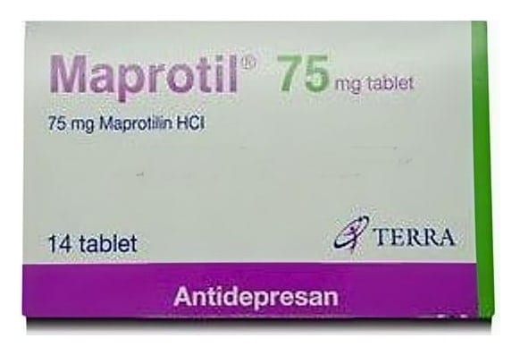

Maprotil 75 mg Tablet, 14 Adet

Ne için kullanılır
KT · Bölüm 1MAPROTİL®75 mg maprotilin hidroklorür içerir.
MAPROTİL®tetrasiklik antidepresanlar olarak isimlendirilen ilaç grubuna aittir.
Depresyon ve ruhsal bozuklukların tedavisinde kullanılır.
MAPROTİL®,
endişe, üzüntü, ilginin kaybı, günlük işleri yapmakta zorluklar, sinirlilik ve başarısız ya da suçluluk hissetme gibi depresyon belirtilerini hafifletmeye yardımcı olur. Ayrıca depresyona bağlı gelişen enerji eksikliği, yorgunluk, uykusuzluk, baş dönmesi, baş ağrısı, hazımsızlık ve ağrı gibi fiziksel belirtileri de iyileştirir.